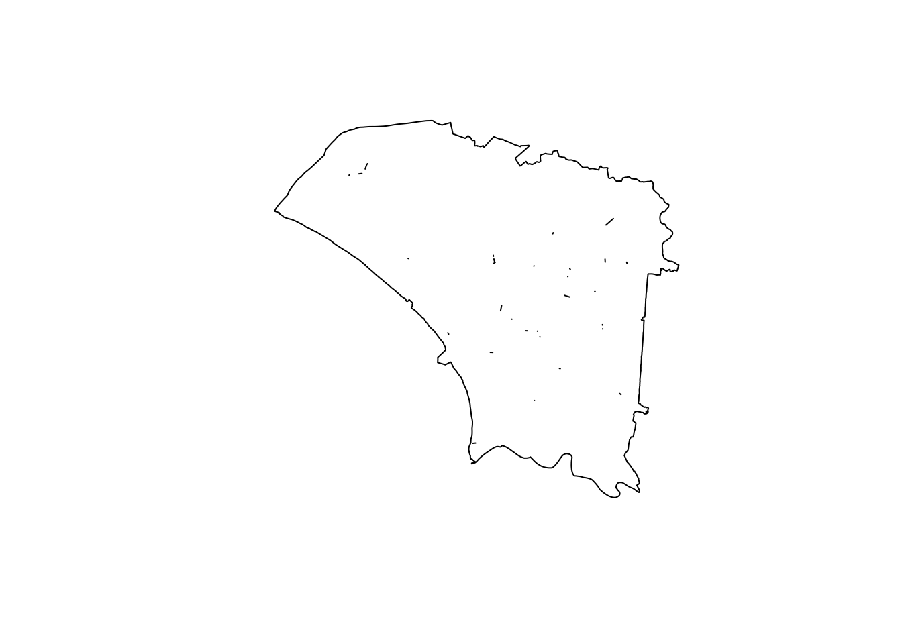
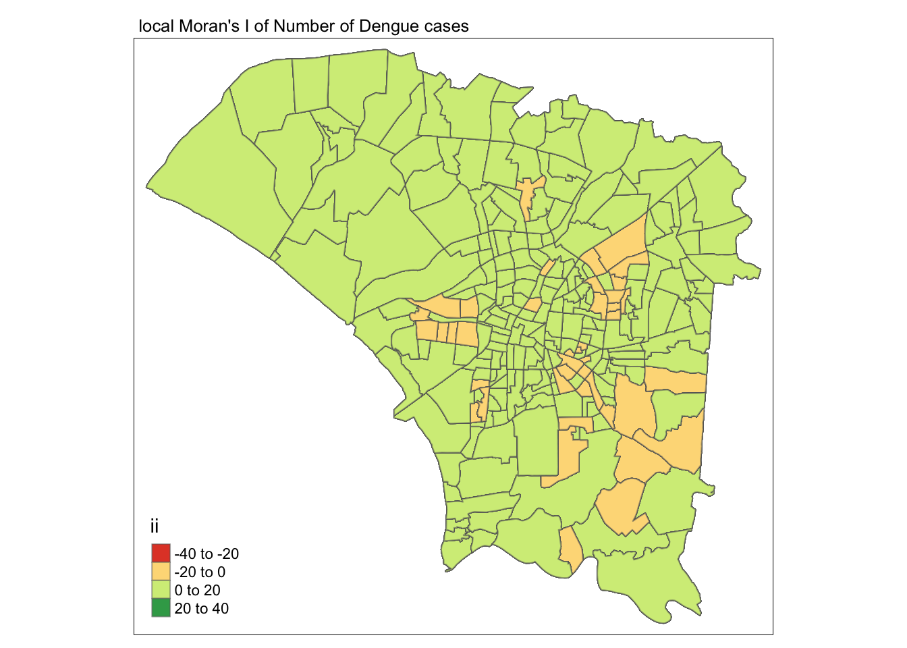
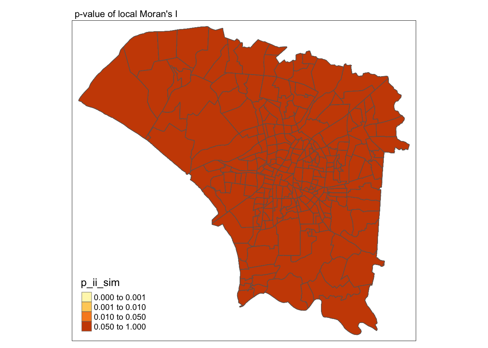
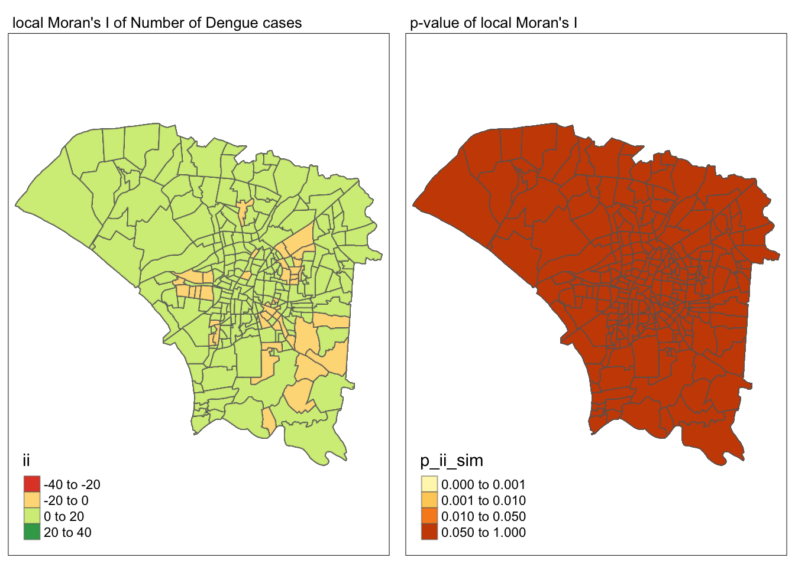
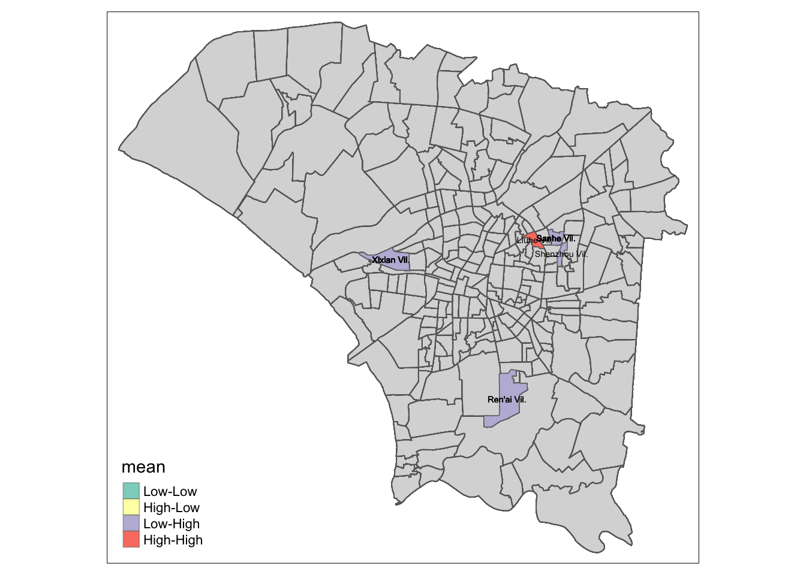
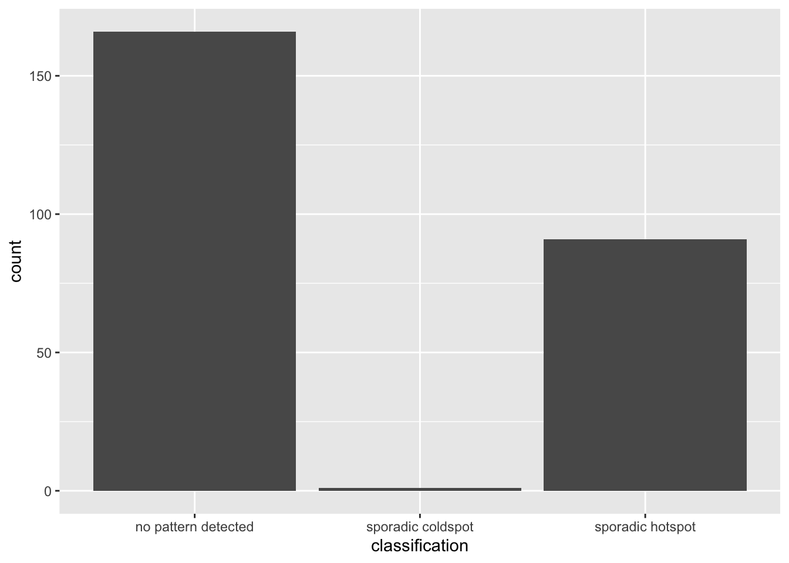
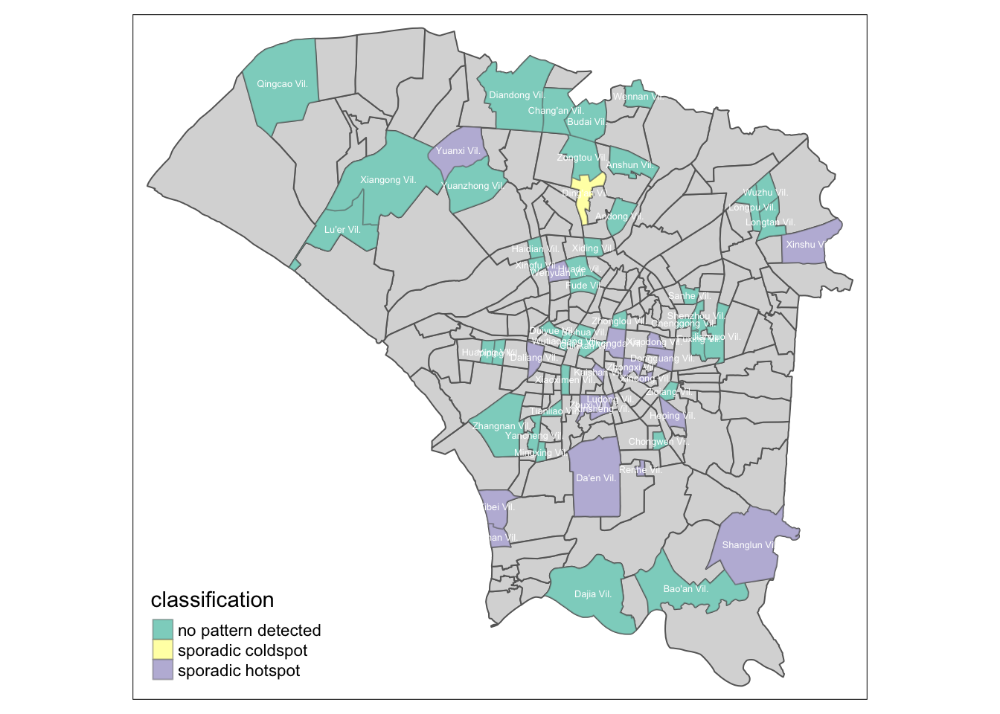

pacman:: p_load(tidyverse, sf, tmap, sfdep, lubridate)Take-home Exercise 2
1 Overview
1.1 Setting the scene
Dengue Hemorrhagic Fever (in short dengue fever) is one of the most widespread mosquito-borne diseases in the most tropical and subtropical regions. It is an acute disease caused by dengue virus infection which is transmitted by female Aedes aegypti and Aedes albopictus mosquitoes. In 2015, Taiwan had recorded the most severe dengue fever outbreak with more than 43,000 dengue cases and 228 deaths. Since then, the annual reported dengue fever cases were maintained at the level of not more than 200 cases. However, in 2023, Taiwan recorded 26703 dengue fever cases. Figure below reveals that more than 25,000 cases were reported at Tainan City.
 Figure 2 and 3 below reveal that more than 80% of the reported dengue fever cases occurred in the month August-November 2023 and epidemiology week 31-50.
Figure 2 and 3 below reveal that more than 80% of the reported dengue fever cases occurred in the month August-November 2023 and epidemiology week 31-50.


1.2 Objectives
As a curious geospatial analytics green horn, I am interested to discover:
if the distribution of dengue fever outbreak at Tainan City, Taiwan are independent from space and space and time.
If the outbreak is indeed spatial and spatio-temporal dependent, then, you would like to detect where are the clusters and outliers, and the emerging hot spot/cold spot areas.
1.3 The Tasks
The specific tasks of this take-home exercise are as follows:
Using appropriate function of sf and tidyverse, preparing the following geospatial data layer:
a study area layer in sf polygon features. It must be at village level and confined to the D01, D02, D04, D06, D07, D08, D32 and D39 counties of Tainan City, Taiwan.
a dengue fever layer within the study area in sf point features. The dengue fever cases should be confined to epidemiology week 31-50, 2023.
a derived dengue fever layer in spacetime s3 class of sfdep. It should contain, among many other useful information, a data field showing number of dengue fever cases by village and by epidemiology week.
Using the extracted data, perform global spatial autocorrelation analysis by using sfdep methods.
Using the extracted data, perform local spatial autocorrelation analysis by using sfdep methods.
Using the extracted data, perform emerging hotspot analysis by using sfdep methods.
Describe the spatial patterns revealed by the analysis above.
2 Setup
2.1 Packages that will be used for this exercise
tidyverse: It is for performing data science tasks such as importing, wrangling and visualising data Tidyverse consist of a family of R packages that includes:
readr: It is for importing csv data.
readxl: It is for importing excel worksheets.
tidyr: It is for manipulating data.
dplyr: It is for data wrangling.
ggplot2: It is for visualising data.
sf: It is for importing, managing, and processing geospatial data
tmap: It is for plotting choropleth maps.
sfdep: It is used for deriving a layer of spacetime s3 class, geometry neighbors, weights and local indicators of spatial association (LISAs).
lubridate: It provides functions to work with date-times and time-spans.
3 Data
3.1 Description of the Data
TAIWAN_VILLAGE_2020, a geospatial data of village boundary of Taiwan. It is in ESRI shapefile format. The data is in Taiwan Geographic Coordinate System. (Source: Historical map data of the village boundary: TWD97 longitude and latitude)
Dengue_Daily.csv, an aspatial data of reported dengue cases in Taiwan since 1998. (Source: Dengue Daily Confirmed Cases Since 1998. Below are selected fields that are useful for this study:
發病日: Onset date
最小統計區中心點X: x-coordinate
最小統計區中心點Y: y-coordinate
3.2 Uploading the data into the environment
st_read() function from sf package is used to import the shapefile file
read.csv() function from readr package is used to import the csv file
tn <- st_read("data/geospatial", layer = "TAINAN_VILLAGE")Reading layer `TAINAN_VILLAGE' from data source
`/Users/chuangjinlei/Desktop/JinLei13/IS415-GAA/Take-home_Ex/Take-home_Ex02/data/geospatial'
using driver `ESRI Shapefile'
Simple feature collection with 649 features and 10 fields
Geometry type: POLYGON
Dimension: XY
Bounding box: xmin: 120.0269 ymin: 22.88751 xmax: 120.6563 ymax: 23.41374
Geodetic CRS: TWD97dengue <- read.csv("data/aspatial/Dengue_Daily.csv")Checking the contents of the dataset before data manipulation
head(tn)Simple feature collection with 6 features and 10 fields
Geometry type: POLYGON
Dimension: XY
Bounding box: xmin: 120.053 ymin: 22.93251 xmax: 120.2905 ymax: 23.16919
Geodetic CRS: TWD97
VILLCODE COUNTYNAME TOWNNAME VILLNAME VILLENG COUNTYID COUNTYCODE
1 67000280002 臺南市 歸仁區 六甲里 Liujia Vil. D 67000
2 67000350032 臺南市 安南區 青草里 Qingcao Vil. D 67000
3 67000150009 臺南市 七股區 溪南里 Xinan Vil. D 67000
4 67000150010 臺南市 七股區 七股里 Qigu Vil. D 67000
5 67000150008 臺南市 七股區 龍山里 Longshan Vil. D 67000
6 67000150017 臺南市 七股區 中寮里 Zhongliao Vil. D 67000
TOWNID TOWNCODE NOTE geometry
1 D33 67000280 <NA> POLYGON ((120.2725 22.95868...
2 D06 67000350 <NA> POLYGON ((120.1176 23.08387...
3 D22 67000150 <NA> POLYGON ((120.121 23.1355, ...
4 D22 67000150 <NA> POLYGON ((120.1312 23.1371,...
5 D22 67000150 <NA> POLYGON ((120.0845 23.13503...
6 D22 67000150 <NA> POLYGON ((120.126 23.16917,...head(dengue) 發病日 個案研判日 通報日 性別 年齡層 居住縣市 居住鄉鎮 居住村里
1 1998/01/02 None 1998/01/07 男 40-44 屏東縣 屏東市 None
2 1998/01/03 None 1998/01/14 男 30-34 屏東縣 東港鎮 None
3 1998/01/13 None 1998/02/18 男 55-59 宜蘭縣 宜蘭市 None
4 1998/01/15 None 1998/01/23 男 35-39 高雄市 苓雅區 None
5 1998/01/20 None 1998/02/04 男 55-59 宜蘭縣 五結鄉 None
6 1998/01/22 None 1998/02/19 男 20-24 桃園市 蘆竹區 None
最小統計區 最小統計區中心點X 最小統計區中心點Y 一級統計區 二級統計區
1 A1320-0136-00 120.505898941 22.464206650 A1320-04-008 A1320-04
2 A1303-0150-00 120.453657460 22.466338948 A1303-09-007 A1303-09
3 A0201-0449-00 121.751433765 24.749214667 A0201-23-006 A0201-23
4 A6408-0153-00 120.338158907 22.630316700 A6408-10-010 A6408-10
5 A0209-0232-00 121.798235373 24.684507639 A0209-10-005 A0209-10
6 None None None None None
感染縣市 感染鄉鎮 感染村里 是否境外移入 感染國家 確定病例數 居住村里代碼
1 None None None 否 None 1 None
2 None None None 是 None 1 None
3 None None None 是 None 1 None
4 None None None 否 None 1 None
5 None None None 否 None 1 None
6 None None None 是 None 1 None
感染村里代碼 血清型 內政部居住縣市代碼 內政部居住鄉鎮代碼 內政部感染縣市代碼
1 None None 10013 1001301 None
2 None 第二型 10013 1001303 None
3 None None 10002 1000201 None
4 None None 64 6400800 None
5 None None 10002 1000209 None
6 None None 68 6800500 None
內政部感染鄉鎮代碼
1 None
2 None
3 None
4 None
5 None
6 None3.3 Data Wrangling
3.3.1 Obtaining study area in sf polygon feature
- filter() function from dplyr package is used to confine the study area layer in sf polygon features to D01, D02, D04, D06, D07, D08, D32 and D39 counties of Tainan City, Taiwan.
Tainan <- tn |> filter(TOWNID == "D01" | TOWNID == "D02" | TOWNID == "D04"| TOWNID == "D06" | TOWNID == "D07" | TOWNID == "D08" | TOWNID == "D32" | TOWNID == "D39") Checking Coordinate reference system of Tainan geospatial object
st_crs(Tainan)Coordinate Reference System:
User input: TWD97
wkt:
GEOGCRS["TWD97",
DATUM["Taiwan Datum 1997",
ELLIPSOID["GRS 1980",6378137,298.257222101,
LENGTHUNIT["metre",1]]],
PRIMEM["Greenwich",0,
ANGLEUNIT["degree",0.0174532925199433]],
CS[ellipsoidal,2],
AXIS["geodetic latitude (Lat)",north,
ORDER[1],
ANGLEUNIT["degree",0.0174532925199433]],
AXIS["geodetic longitude (Lon)",east,
ORDER[2],
ANGLEUNIT["degree",0.0174532925199433]],
USAGE[
SCOPE["Horizontal component of 3D system."],
AREA["Taiwan, Republic of China - onshore and offshore - Taiwan Island, Penghu (Pescadores) Islands."],
BBOX[17.36,114.32,26.96,123.61]],
ID["EPSG",3824]]The units are in decimal degree which corresponds to a Geographic Coordinate system
Coordinate reference system is TWD97
EPSG code is 3824

Upon checking information on TWD97, the unit of measurements and EPSG code matches.
3.3.2 Data Wrangling on Dengue dataframe
as_date() function from the lubridate package is used to convert the attribute from character format into the correct date format
filter() function from dplyr package is then being used to confine dengue fever cases to year 2023
The epidemiologyweek attribute is calculated using week() function from the lubridate package to count the week of the year
filter() function from dplyr package is then being used to confine dengue fever cases to epidemiology week 31 to 50
as.numeric() function is used to the x-coordinate and y-coordinate attribute from character object into the appropriate numerical object
dengue <- dengue |> mutate(發病日 = as_date(發病日))
dengue2023 <- dengue |> filter(year(發病日) == 2023 )
dengue2023 <- dengue2023 |> mutate("epidemiologyweek" = week(發病日))
denguewk <- dengue2023 |> filter(epidemiologyweek == 31:50)
denguewk <- denguewk |> mutate(最小統計區中心點X = as.numeric(最小統計區中心點X), 最小統計區中心點Y = as.numeric(最小統計區中心點Y) )3.4 Data processing
3.4.1 Converting denguewk aspatial data into geospatial data
Since the x and y coordinate is in decimal degree, it is highly likely to be in geographic coordinate system.
Would assume that the EPSG code corresponds to TWD97 as this is Taiwan data and it is also a geographic coordinate system
denguesf <- denguewk |> st_as_sf(coords = c("最小統計區中心點X", "最小統計區中心點Y"), crs = 3824) Checking content after transforming to shapefile
head(denguesf)Simple feature collection with 6 features and 25 fields
Geometry type: POINT
Dimension: XY
Bounding box: xmin: 120.1693 ymin: 22.95898 xmax: 120.2361 ymax: 23.01257
Geodetic CRS: TWD97
發病日 個案研判日 通報日 性別 年齡層 居住縣市 居住鄉鎮 居住村里
1 2023-07-30 2023/07/31 2023/07/31 女 55-59 台南市 永康區 中興里
2 2023-07-31 2023/08/01 2023/08/01 女 35-39 台南市 東區 崇學里
3 2023-07-31 2023/08/02 2023/08/01 男 50-54 台南市 安平區 平安里
4 2023-08-01 2023/08/03 2023/08/03 男 35-39 台南市 仁德區 成功里
5 2023-08-01 2023/08/02 2023/08/02 女 20-24 台南市 東區 仁和里
6 2023-08-02 2023/08/03 2023/08/03 女 35-39 台南市 永康區 五王里
最小統計區 一級統計區 二級統計區 感染縣市 感染鄉鎮 感染村里 是否境外移入
1 A6731-0744-00 A6731-58-006 A6731-58 台南市 永康區 None 否
2 A6732-0726-00 A6732-39-009 A6732-39 台南市 東區 None 否
3 A6736-0033-00 A6736-03-004 A6736-03 台南市 安平區 None 否
4 A6727-0158-00 A6727-13-001 A6727-13 台南市 仁德區 None 否
5 A6732-0941-00 A6732-53-007 A6732-53 台南市 東區 None 否
6 A6731-0591-00 A6731-51-002 A6731-51 台南市 永康區 None 否
感染國家 確定病例數 居住村里代碼 感染村里代碼 血清型 內政部居住縣市代碼
1 中華民國 1 6703100-025 None None 67
2 中華民國 1 6703200-004 None None 67
3 中華民國 1 6703600-015 None 第一型 67
4 中華民國 1 6702700-012 None None 67
5 中華民國 1 6703200-006 None None 67
6 中華民國 1 6703100-001 None None 67
內政部居住鄉鎮代碼 內政部感染縣市代碼 內政部感染鄉鎮代碼 epidemiologyweek
1 6703100 67 6703100 31
2 6703200 67 6703200 31
3 6703600 67 6703600 31
4 6702700 67 6702700 31
5 6703200 67 6703200 31
6 6703100 67 6703100 31
geometry
1 POINT (120.2361 23.00695)
2 POINT (120.2231 22.97802)
3 POINT (120.1693 23.00093)
4 POINT (120.2307 22.95898)
5 POINT (120.2347 22.96946)
6 POINT (120.2349 23.01257)st_crs(denguesf)Coordinate Reference System:
User input: EPSG:3824
wkt:
GEOGCRS["TWD97",
DATUM["Taiwan Datum 1997",
ELLIPSOID["GRS 1980",6378137,298.257222101,
LENGTHUNIT["metre",1]]],
PRIMEM["Greenwich",0,
ANGLEUNIT["degree",0.0174532925199433]],
CS[ellipsoidal,2],
AXIS["geodetic latitude (Lat)",north,
ORDER[1],
ANGLEUNIT["degree",0.0174532925199433]],
AXIS["geodetic longitude (Lon)",east,
ORDER[2],
ANGLEUNIT["degree",0.0174532925199433]],
USAGE[
SCOPE["Horizontal component of 3D system."],
AREA["Taiwan, Republic of China - onshore and offshore - Taiwan Island, Penghu (Pescadores) Islands."],
BBOX[17.36,114.32,26.96,123.61]],
ID["EPSG",3824]]3.4.2 Obtaining boundary of the study area
- The st_union() function from sf package is used to combine geometries without resolving the boundary
Tn_bound <- Tainan |> st_union()Checking to see if we have obtained the correct study area boundary
plot(Tn_bound)
3.4.3 Obtaining dengue cases that are in the study area
- The st_intersection() function from sf package is used to find the points that fall into the study area
dengue_tn_sf <- st_intersection(denguesf, Tn_bound)3.4.4 Deriving a dengue fever layer in spacetime s3class of sfdep
mutate() function from the dplyr package is used to change the name of the village name attribute so that it corresponds with the attribute from Tainan sf object. select() from the dplyr package is used to select attributes that are needed and drop those that are not needed.
There were some missing data from village name attribute from the dengue data. Hence, filter() function from the dplyr package was used to remove those observations with missing data in the village name field. st_drop_geometry() from the sf package is used to drop the geometry field and turn the data into a dataframe.
left_join() function from the dplyr package was used to join the data and st_drop_geometry() function from sf package was used to drop the geometry field to turn the data into a dataframe.
is.na() function was used to replace empty data with 0
Functions from the dplyr package was used to group data by VillCODE and epidemiologyweeks to compute a cases data field showing number of dengue fever cases by village and by epidemiology week. Ungroup() and complete() functions were used to ensure that VILLCODE and epidemiologyweeks that did not have any cases were not dropped and filled with 0 cases.
filter() function was used to remove week 0s as they are not part of the analysis. as.dataframe() function was used to convert the data in a dataframe.
spacetime() function from sfdep was used to create a spacetime s3 class object with:
- A dataframe that has the data field showing number of dengue fever cases by villahe and by epidemiology week.
- A sf object that consist of the geospatial information of the boundary each village.
dengue_tn_sf <- dengue_tn_sf |> mutate("VILLNAME" = 居住村里) |> select(VILLNAME, epidemiologyweek, geometry)
dengue_prest <- dengue_tn_sf |> filter(VILLNAME != "None") |> st_drop_geometry()
dengue_prest2 <- Tainan |> left_join(dengue_prest, by = "VILLNAME") |> st_drop_geometry()
dengue_prest2[is.na(dengue_prest2)] <- 0
dengue_prest3 <- dengue_prest2 |>
group_by(VILLCODE, epidemiologyweek) |>
summarize(cases = n()) |>
ungroup() |>
complete(VILLCODE, epidemiologyweek, fill = list(cases = 0))
dengue_prest3 <- dengue_prest3 |> filter(epidemiologyweek != 0) |> as.data.frame()
dengue_st <- spacetime(.data = dengue_prest3, .geometry = Tainan, .loc_col = "VILLCODE", .time_col = "epidemiologyweek")- is_spacetime() function from sfdep was used to ensure that the spacetime cube was succesfully created.
is_spacetime_cube(dengue_st)[1] TRUE4 Global Spatial Autocorrelation Analysis
4.1 Deriving the spatial weights
activate() function from the dplyr package is used to activate the geometry context of the spacetime cube
mutate() function from the dplyrs package is used to create two new attributes nb and wt
st_contiguity() function from the sfdep package is used to identify neighbours and create a neighbour list for each observation (based on Queen method)
st_inverse_distance() function from sfdep package is used to derive an inverse distance weights list for each observation
set_nbs() and set_wts() function is used to activate the data context again and copy over the nb columns to each time-slice.
dengue_nb <- dengue_st |>
activate("geometry") |>
mutate(nb = st_contiguity(geometry),
wt = st_inverse_distance(nb, geometry,
scale = 1,
alpha = 1),
.before = 1) |>
set_nbs("nb") |>
set_wts("wt")4.2 Computing Global Moran’s I
- global_moran() function from sfdep package is used to compute the Moran’s I value
gmoranI <- global_moran(dengue_nb$cases,
dengue_nb$nb,
dengue_nb$wt)
glimpse(gmoranI)List of 2
$ I: num 0.000623
$ K: num 20.1- Global Moran’s I statistic is > 0 which suggest that dengue cases are clustered and dengue cases seems to appear in similar locations.
4.3 Performing Global Moran’s I test
- global_moran_test() function from the sfdep package is used to conduct the Global Moran’s I test
global_moran_test(dengue_nb$cases,
dengue_nb$nb,
dengue_nb$wt)
Moran I test under randomisation
data: x
weights: listw
Moran I statistic standard deviate = 0.12214, p-value = 0.4514
alternative hypothesis: greater
sample estimates:
Moran I statistic Expectation Variance
6.227828e-04 -1.938360e-04 4.470048e-05 - The p-value from the test is 0.4514 which is > than the alpha value of 0.05, hence, we fail to reject the null hypothesis that the observed spatial distribution of cases of dengue in Tainan is the result of random spatial processes.
4.4 Performing Global Moran’s I permutation test
The permutation test is conducted when there is doubt that the assumptions of Moran’s I are true (normality and randomization). Monte Carlo simulation is then being employed for the hypothesis testing.
set.seed() function is used to ensure that computation is reproducible as the test is conducted under Monte Carlo simulation and will vary every time it is being conducted
global_moran_perm() function from sfdep package is used to perform Monte Carlo simulation
set.seed(1234)
global_moran_perm(dengue_nb$cases,
dengue_nb$nb,
dengue_nb$wt,
nsim = 99)
Monte-Carlo simulation of Moran I
data: x
weights: listw
number of simulations + 1: 100
statistic = 0.00062278, observed rank = 61, p-value = 0.78
alternative hypothesis: two.sided- Similarly the p-value under Monte Carlo Simulation is 0.78 which is > than the alpha value of 0.05, hence, we do not have sufficient evidence to reject the null hypothesis that the spatial distribution of cases of dengue in the Tainan region resemble random distribution.
5 Local Spatial Autocorrelation Analysis
5.1 Computing Local Moran’s I
- local_moran() function from sfdep package is being used to compute local Moran’s I statistic
lisa <- dengue_nb |>
mutate(local_moran = local_moran(
cases, nb, wt, nsim = 99),
.before = 1) %>%
unnest(local_moran)5.2 Joining data
- left_join() from the dplyr package is being used to join the data to provide geospatial boundary of each village before visualisation
tainan_lisa <- Tainan |> left_join(lisa,
by = "VILLCODE")5.3 Visualising Local Moran’s I
tmap_mode("plot")
map1 <- tm_shape(tainan_lisa) +
tm_fill("ii") +
tm_borders(alpha = 0.5) +
tm_view(set.zoom.limits = c(6,8)) +
tm_layout(main.title = "local Moran's I of Number of Dengue cases",
main.title.size = 0.8)
map1
- The local Moran statistic of villages in Tainan mainly ranges from 0 to 20 with a smaller subgroup lying between -20 to 0.
5.4 Visualising p-value of Local Moran’s I statistic
tmap_mode("plot")
map2 <- tm_shape(tainan_lisa) +
tm_fill("p_ii_sim", breaks = c(0,0.001, 0.01, 0.05, 1)) +
tm_borders(alpha = 0.5) +
tm_layout(main.title = "p-value of local Moran's I",
main.title.size = 0.8)
map2 
- From the mapping of p-values, we can observed that none of the p-values are statistically significant at an alpha value of 0.05.
5.5 Visualising local Moran’s I and p-value
tmap_arrange(map1, map2, ncol = 2)
5.6 Visualising LISA Map
lisa_sig <- tainan_lisa |>
filter(p_ii < 0.05)
tmap_mode("plot")
map3 <- tm_shape(tainan_lisa) +
tm_polygons() +
tm_borders(alpha = 0.5) +
tm_shape(lisa_sig) +
tm_fill("mean") +
tm_borders(alpha = 0.4) +
tm_text('VILLENG', size = 0.45, col = "black")
map3 
From the LISA map, we can identify 5 villages which are outliers. They are Xixian Village, Tian Fei Village, Sanhe Village, Zheng Xing Village and Shen Zhou Village. These villages have low amounts of dengue cases but are surrounded by villages with high dengue cases.
We can also identify 2 clusters which are Ren’ai Village and Liu He village. These village have high dengue cases and are surrounded by villages with high dengue cases as well.
But, since none of the p-value for the villages are statistically significant we do not have sufficient evidence to conclude that these villages are indeed outliers and clusters.
6 Emerging Hotspot analysis
6.1 Computing EHSA
- emerging_hotspot_analysis() function from the sfdep package is used to perform emerging hotspot analysis.
set.seed(123)
ehsa <- emerging_hotspot_analysis(x = dengue_st, .var = "cases", k = 1, nsim = 99)6.2 Visualising the distribution of EHSA classes
ggplot(data = ehsa,
aes(x = classification)) +
geom_bar()
From bar-chart, we can identify three emerging hot spot analysis patterns and they are no pattern detected, sporadic cold spot and sporadic hot spot.
No pattern detected would suggest that the village does not fall into any of the hot or cold spot patterns.
Sporadic coldspot would suggest that there is a statistically significant cold spot for the final time-step interval with a history of also being an on-again and off-again cold spot. Less than 90 percent of the time-step intervals have been statistically significant cold spots and none of the time-step intervals have been statistically significant hot spots.
Sporadic hot spot would suggest a statisticallt significant hot spot for the final time-step interval that has a history of also being an on-again and off-again hot spot. Less than 90 percent of the time-step intervals have been statistically significant hot spots and none of the time-step intervals have been significant cold spots.
6.3 Visualising EHSA
- joining sf layer with ehsa layer using left_join() from dplyr package to provide Village with geographic context
tainan_ehsa <- Tainan |> left_join(ehsa,
by = c("VILLCODE" = "location"))ehsa_sig <- tainan_ehsa |>
filter(p_value < 0.05)
tmap_mode("plot")
tm_shape(tainan_ehsa) +
tm_polygons() +
tm_borders(alpha = 0.5) +
tm_shape(ehsa_sig) +
tm_fill("classification") +
tm_borders(alpha = 0.4) +
tm_text('VILLENG', size = 0.4, col = "white") 
7 Conclusion
From the Global Spatial Autocorrelation analysis, the Global Moran’s I Statistic was 0.000623 which is bigger than zero and suggest that dengue cases are clustered. But, from the Global Moran’s I test and Global Moran’s Permutation test the P-values were 0.4514 and 0.78 respectively. These P-values are bigger than the alpha values of 0.05, hence I do not have sufficient evidence to reject the null hypothesis that the dengue cases in Tainan are randomly distributed.
From the Local Spatial Autocorrelation Analysis, it was revealed that there were five village outliers (Xixian Village, Tian Fei Village, Sanhe Village, Zheng Xing Village and Shen Zhou Village) with low dengue cases but were surrounded with villages that had high dengue cases. I was also able to find two village clsuters (Ren’ai Village and Liu He village) which had high number of dengue cases and are surrounded by villages with high number of dengue cases as well. But, since none of the P-values for the outlier and cluster villages were bigger than the alpha value of 0.05, I do not have sufficient evidence to conclude that these villages are indeed outliers and clusters.
Lastly, from the emerging hot spot analysis, I was able to identify three emerging hot spot patterns which are no pattern detected, sporadic cold spot and sporadic hot spot. I would suggest for the Taiwanese government to compare the environmental conditions between villages which were identified as sporadic cold spot and sporadic hot spot to find out how they can change the environmental conditions in villages that were identified as hot spots to reduce the number of dengue cases that are emerging from these villages.